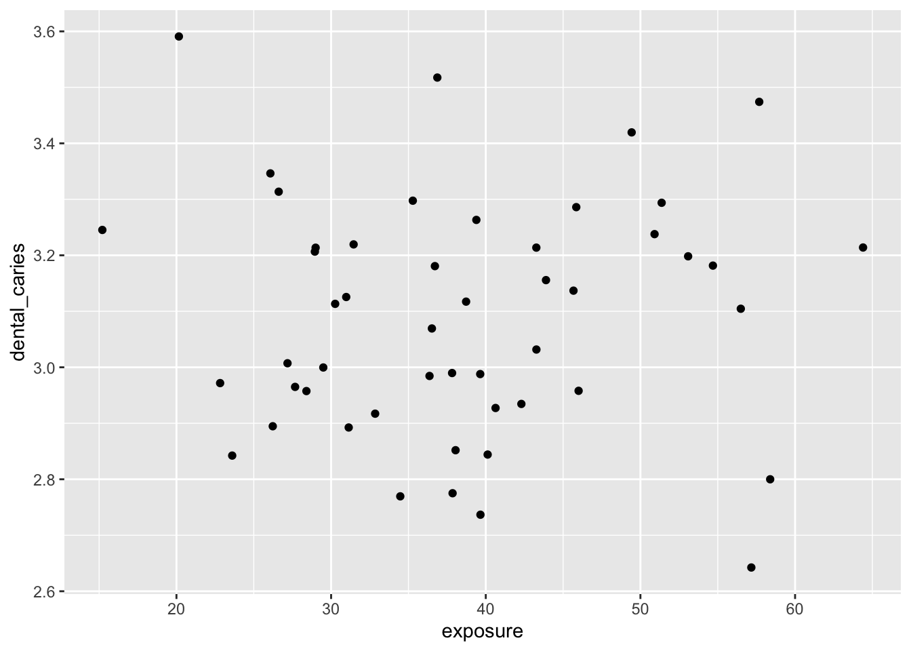

Homework 6
Audrey Commerford
2025-02-19
- Think about an ongoing study in your lab (or a paper you have read in a different class), and decide on a pattern that you might expect in your experiment if a specific hypothesis were true.
I was recently reading about fluoridated water as a public health intervention. I am basing this model vaguely off of this study done in Canada following the cessation of community water fluoridation in certain areas. The authors note that population exposure to fluoridation has decreased from 43% in 2007 to 39% in 2017. The expected pattern is that the prevalence of dental caries across a country will increase as population fluoride exposure decreases.
- To start simply, assume that the data in each of your treatment groups follow a normal distribution. Specify the sample sizes, means, and variances for each group that would be reasonable if your hypothesis were true. You may need to consult some previous literature and/or an expert in the field to come up with these numbers.
# the explanatory variable is the percentage of population exposed to fluoridated water in a given region
exposure <- rnorm(50, mean=41, sd=10)
hist(exposure)
# the response variable is the prevalence of dental caries in the population
dental_caries <- rnorm(50, mean=3.1, sd=0.2)
hist(dental_caries)
- Using the methods we have covered in class, write code to create a random data set that has these attributes. Organize these data into a data frame with the appropriate structure.
# creating the data frame
data_frame <- data.frame(exposure, dental_caries)
print(data_frame)## exposure dental_caries
## 1 47.63958 3.075797
## 2 43.09335 2.779293
## 3 44.90816 3.237654
## 4 61.38719 2.660368
## 5 38.31644 3.124995
## 6 55.95170 3.179434
## 7 37.71194 2.602194
## 8 34.38948 3.404699
## 9 44.37878 3.020200
## 10 36.28551 3.146728
## 11 31.19116 3.335912
## 12 35.31582 2.897882
## 13 47.16201 3.291979
## 14 55.03557 3.036005
## 15 29.79524 2.827488
## 16 31.87530 3.191886
## 17 50.34780 2.953948
## 18 35.87763 3.205512
## 19 38.19264 3.219929
## 20 51.89757 3.094999
## 21 49.11570 3.260117
## 22 50.66690 3.383905
## 23 48.84749 2.931882
## 24 49.91910 3.539335
## 25 48.91034 3.246603
## 26 30.26445 2.631631
## 27 51.26728 2.953373
## 28 50.54595 3.357395
## 29 36.49957 3.058791
## 30 47.82880 2.734563
## 31 38.28618 2.742563
## 32 32.19878 3.021601
## 33 43.85024 3.074821
## 34 47.03606 3.099272
## 35 28.53802 3.080296
## 36 39.93842 3.223547
## 37 30.27417 3.212660
## 38 23.70443 2.929037
## 39 33.67190 3.432694
## 40 46.94189 3.164372
## 41 35.06168 3.270472
## 42 44.64480 3.130571
## 43 34.33820 3.422352
## 44 33.08814 3.375050
## 45 45.16736 3.329588
## 46 42.43777 3.016806
## 47 26.07810 3.252627
## 48 41.17291 3.175863
## 49 53.17650 3.319065
## 50 48.63740 2.916578# fitting the variables to a linear model
model <- lm(dental_caries~exposure)- Now write code to analyze the data (probably as an ANOVA or regression analysis, but possibly as a logistic regression or contingency table analysis. Write code to generate a useful graph of the data.
# using anova to test for significance
anova(model)## Analysis of Variance Table
##
## Response: dental_caries
## Df Sum Sq Mean Sq F value Pr(>F)
## exposure 1 0.0022 0.002204 0.0439 0.8349
## Residuals 48 2.4082 0.050171# and qplot to plot the results
library(ggplot2)
qplot(x=exposure, y=dental_caries)## Warning: `qplot()` was deprecated in ggplot2 3.4.0.
## This warning is displayed once every 8 hours.
## Call `lifecycle::last_lifecycle_warnings()` to see where this
## warning was generated.
Try running your analysis multiple times to get a feeling for how variable the results are with the same parameters, but different sets of random numbers.
Now, using a series of for loops, adjust the parameters of your data to explore how they might impact your results/analysis, and store the results of your for loops into an object so you can view it. For example, what happens if you were to start with a small sample size and then re-run your analysis? Would you still get a significant result? What if you were to increase that sample size by 5, or 10? How small can your sample size be before you detect a significant pattern (p < 0.05)? How small can the differences between the groups be (the “effect size”) for you to still detect a significant pattern?
# using a for loop to test different sample sizes
sample_sizes <- seq(10, 100, by = 10)
n_iter <- length(sample_sizes)
# Pre-allocate a data frame
results <- data.frame(SampleSize = sample_sizes,
PValue = rep(NA, n_iter),
Significant = rep(NA, n_iter))
# Loop over the sample sizes
for (i in seq_along(sample_sizes)) {
n <- sample_sizes[i]
# Generate random data
exposure <- rnorm(n, mean = 41, sd = 10)
dental_caries <- rnorm(n, mean = 3.1, sd = 0.2)
# Fit the linear model and extract p-value from ANOVA
model <- lm(dental_caries ~ exposure)
p_value <- anova(model)$`Pr(>F)`[1]
# Store the results in the pre-allocated data frame
results$PValue[i] <- p_value
results$Significant[i] <- p_value < 0.05
}
# View the results
print(results)## SampleSize PValue Significant
## 1 10 0.34803088 FALSE
## 2 20 0.81535930 FALSE
## 3 30 0.91150808 FALSE
## 4 40 0.69429492 FALSE
## 5 50 0.37508751 FALSE
## 6 60 0.87354307 FALSE
## 7 70 0.99653179 FALSE
## 8 80 0.68737469 FALSE
## 9 90 0.06953553 FALSE
## 10 100 0.28627394 FALSEAlternatively, for the effect sizes you originally hypothesized, what is the minimum sample size you would need in order to detect a statistically significant effect? Again, run the model a few times with the same parameter set to get a feeling for the effect of random variation in the data.
Write up your results in a markdown file, organized with headers and different code chunks to show your analysis. Be explicit in your explanation and justification for sample sizes, means, and variances.
If you have time, try repeating this exercise with one of the more sophisticated distributions, such as the gamma or negative binomial (depending on the kind of data you have). You will have to spend some time figuring out by trial and error the parameter values you will need to generate appropriate means and variances of the different groups.
edit